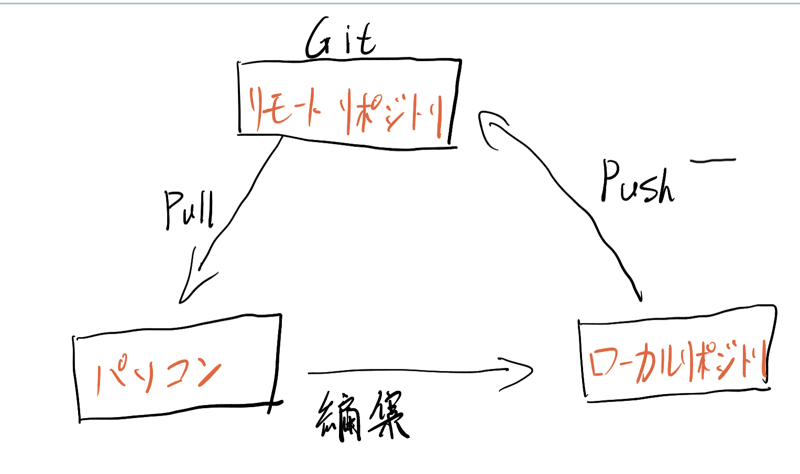

第一回のまとめ
１、Githubについて
■Gitはバージョン管理システムである。最大の特徴は分散型ということだ。
■これまでの管理システムでは、サーバー上にある１つのフォルダを、利用者が共同で使用する。
このような管理システムはチームが共同利用する時、一貫性を保つのが難しい。
（例えば自分で編集したファイルの内容は、他の人に削除された）
Gitはこの問題を解決できる.「分散型」と言われるとおり、自分のパソコンに全ての変更履歴を含む完全なフォルダの複製を作成できるということだ。

■これはつまり、元フォルダのコピーをローカルリポジトリに置いておけて、自由に編集できる。
だから、複数人で仕事をやる時に起こりやすい問題を回避することができて、開発者間の共同作業を柔軟に行える.
Htmlについて
■HTMLは、ウェブページを作成するために開発された言語である。
現在、インターネット上で公開されてるウェブページのほとんどは、HTMLとCSSで作成されている。また、HTMLを書くには「ダグ」を理解するが必要である。
■タグとは、「文字（テキスト）に意味を与えてあげる印のようなもの」と言えます。
例えば、文改行にしたい時、<br>ダグを使用
12345<br>6789
「結果」
12345
6789